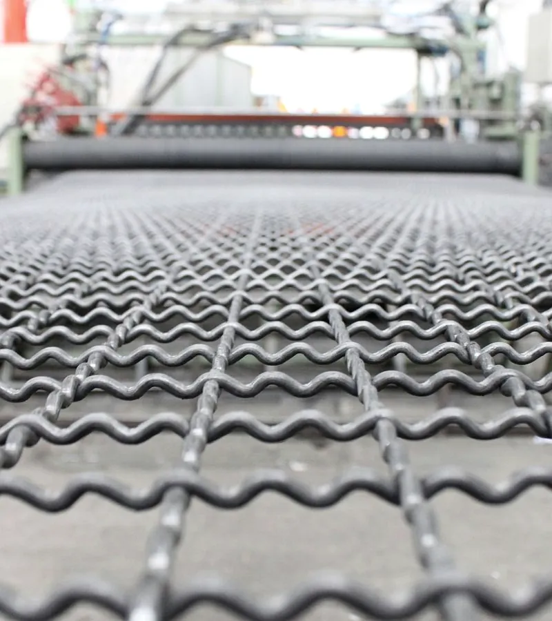
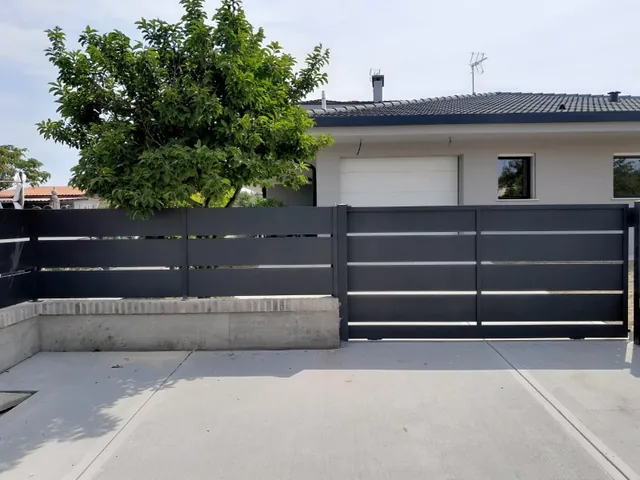
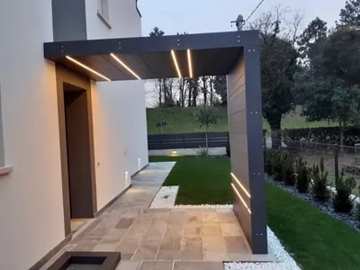
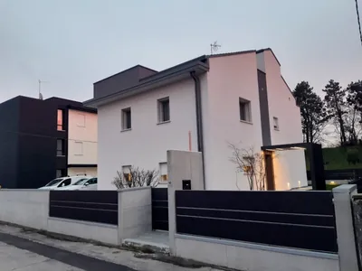
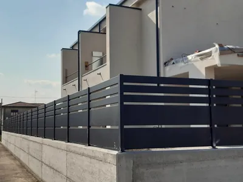
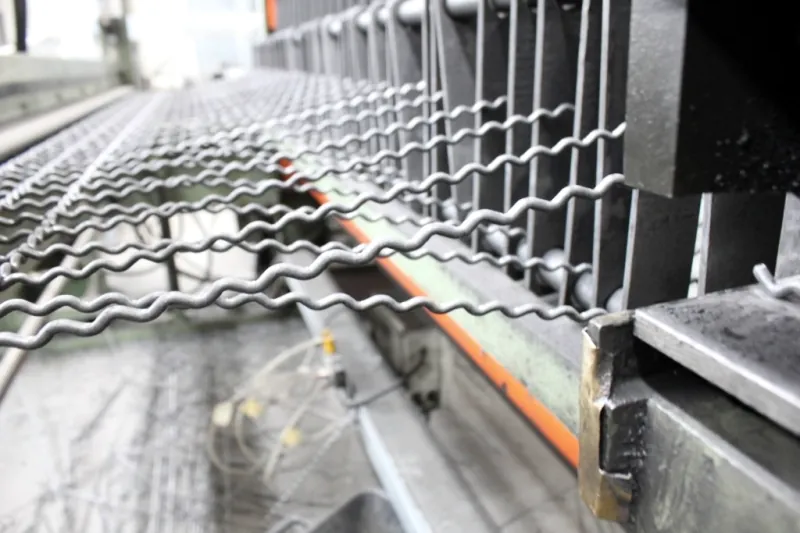

Produciamo
e montiamo.

Recinzioni e cancelli, dalla vendita alla posa.
Villatora di Saonara. Preventivo gratuito.
Lunedì-venerdì 8.00-12.00 e 13.30-17.30
Come chiedere il preventivo
Gratuito e senza impegno. Bastano due o tre foto e le misure.
Mandateci foto e misure
Due o tre foto del punto da chiudere, i metri lineari, l'altezza e l'indirizzo del lavoro. Per email, oppure diteceli al telefono.
Vi richiamiamo
Guardiamo foto e misure, vi richiamiamo per capire il lavoro e fissiamo l'appuntamento in sede.
Vedete i modelli, avete il preventivo
In sede c'è un'ampia esposizione. Lì vi diamo il preventivo, gratuito.
Si apre un'email già scritta: aggiungete le foto.
Recinzioni e cancelli per la casa
In ferro, acciaio, acciaio e vetro e alluminio, dalla progettazione alla posa in opera.

Portale d'ingresso con luci a LEDLamiera antracite 
Casa nuova, recinzione su murettoAlluminio antracite, di sera 
Casa a schiera, doghe orizzontaliAlluminio antracite


Recinzioni in alluminio
Pannelli a doghe su muretto, antracite o bianchi, abbinati al cancello.
Cancelli carrai e pedonali
Ad anta o scorrevoli, "su misura" o "su progetto" del cliente. Cancelli in kit in pronta consegna, certificati EN 13241-1.
Ringhiere, parapetti e inferriate
Per recinzioni, scale interne ed esterne e soppalchi. Inferriate antintrusione fisse o apribili.
Rete metallica e pali
Rete a maglia sciolta, elettrosaldata e ondulata, con pali e colonne zincate a caldo.
Anche tettoie, recinzioni in grigliato e porte di sicurezza.
Esposizione in sede, su appuntamento
Vantiamo al nostro interno un'ampia esposizione di modelli di recinzione, dalla più semplice ed economica a quella più complessa.
Chiedi l'appuntamento
La ditta Formentin Srl nasce nei primi anni '70, con il commercio di attrezzature edili e la produzione di reti metalliche.
Reti ondulate di nostra produzione
Produciamo direttamente al nostro interno robuste reti ondulate a maglia intrecciata, con filo trafilato nero o zincato. Si produce su ordinazione, in rotolo o in pannelli su misura.
| Maglia | Filo, diametro |
|---|---|
| 10 x 10 mm | 2 mm |
| 12 x 12 mm | 2 mm |
| 15 x 15 mm | 2,5 mm |
| 20 x 20 mm | 3 mm |
| 30 x 30 mm | 3 o 4 mm |
| 40 x 40 mm | 4 mm |
Altre tipologie su richiesta. Produciamo anche le colonne per recinzioni e cancelli, zincate completamente a caldo dopo la lavorazione.
Rivenditori e installatori ufficiali Betafence
Sistemi di recinzione per uso civile, industriale e sportivo: aziende, condomini, impianti sportivi. La posa in opera è eseguita anche da nostro personale.
- Securifor 2D e 3D
- Nelle altezze di 2,0 e 2,4 m. Su ordinazione anche 3,0 m.
- Nylofor 3D, F, City, 2D e 2D Super
- Pannelli in rete elettrosaldata.
- Decofor
- Recto, Arco e Wave.
- Maglia sciolta Extra Forte
- Per recinzioni che richiedono una notevole robustezza: impianti sportivi, complessi industriali.
- Pannelli ForFence
- Filo d'acciaio da 5 mm pre-zincato, maglia 200 x 50 mm, altezze da 600 a 2000 mm.
Orari e strada
Lunedì-venerdì 8.00-12.00 e 13.30-17.30
| Lunedì-venerdì | 8.00-12.00 e 13.30-17.30 |
|---|---|
| Sabato | su appuntamento |
| Domenica | chiuso |
| Esposizione | su appuntamento |
Facilmente raggiungibile da corso Stati Uniti e dal casello autostradale Padova Zona Industriale.
Indicazioni stradali- Telefono 049 760801
- Cellulare 335 7740278
- info@recinzioniformentin.it
Attrezzature edili al banco
Per imprese, artigiani e giardinieri.
Chiodi e fili, casseri, ferramenta, dischi, segnaletica, antinfortunistica, materiale elettrico, scale, linee vita, rete e pali, giardinaggio, pulizia.
Si eseguono lavori di carpenteria e lavorazione di grigliati elettrosaldati.
Non sapete se c'è quello che vi serve? Chiamate prima di passare.